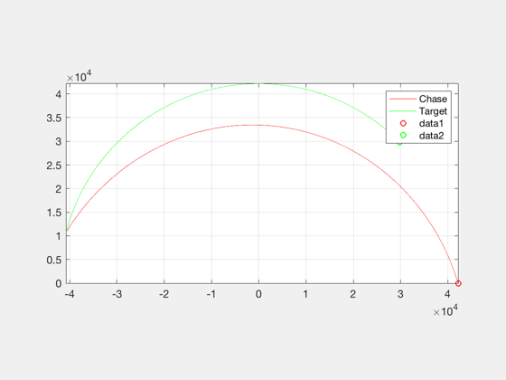
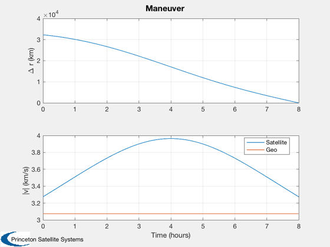

Low thrust geo transfer
Corrects both semi-major axis and inclination. It corrects the semi-major axis first then the inclination. Uses a right-hand-side function in the script.
See also: OrbMnvrPhaseChange
Contents
%-------------------------------------------------------------------------- % Copyright (c) 2017 Princeton Satellite Systems, Inc. % All Rights Reserved. %-------------------------------------------------------------------------- % Since 2017.1 %--------------------------------------------------------------------------
Parameters
elS = [42167 0 0 0 0 0]; elT = [42167 0 0 0 0 pi/4]; dT = 10; hours = 8; deltaA = pi/16; [r,v] = El2RV(elS); [rT,vT] = El2RV(elT); vMagGeo = Mag(v); tEnd = hours*3600; n = ceil(tEnd/dT); xP = zeros(12,n); x = [r;v;rT;vT]; r2 = RVOrbGen(elT,tEnd); vChase = LambertTOF( r, r2, tEnd ); x(4:6) = vChase(:,1);
Simulate
for k = 1:n xP(:,k) = x; x = RK4(@RHS,x,dT,0); end
Plot
[t,tL] = TimeLabl((0:n-1)*dT); NewFig('Orbits') plot(xP(1,:),xP(2,:),'r'); hold on plot(xP(7,:),xP(8,:),'g'); legend('Chase','Target') plot(xP(1,1),xP(2,1),'ro'); plot(xP(7,1),xP(7,1),'go'); grid on axis image yL = { '\Delta r (km)' '|v| (km/s)'}; dR = Mag(xP(7:8,:) - xP(1:2,:)); vMag = Mag(xP(4:6,:)); Plot2D(t,[dR;vMag;vMagGeo*ones(1,n)],tL,yL,'Maneuver','lin',{'1' '[2 3]'}) legend('Satellite', 'Geo','location','best') function xDot = RHS(x,~)
Right hand side
r = x(1:3); v = x(4:6); rT = x(7:9); vT = x(10:12); mu = 3.98600436e5; xDot = [v;-mu*r/Mag(r)^3;vT;-mu*rT/Mag(rT)^3];
end %-------------------------------------- 